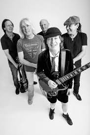
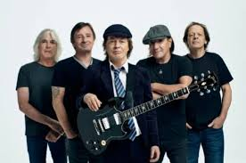
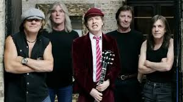
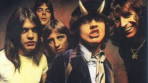

|  |  |  | ||
|  |
| TÍTULO | LETRA |
| T.N.T. |
Oi, oi, oi, oi! Oi, oi, oi, oi! Oi, oi, oi, oi! Oi, oi, oi! See me ride out of the sunset On your color TV screen Out for all that I can get If you know what I mean Women to the left of me And women to the right Ain't got no gun Ain't got no knife Don't you start no fight 'Cause I'm TNT, I'm dynamite (TNT) and I'll win the fight (TNT) I'm a power load (TNT) watch me explode I'm dirty, mean and mighty unclean I'm a wanted man Public enemy number one Understand? So lock up your daughter Lock up your wife Lock up your back door Run for your life The man is back in town So don't you mess me 'round 'Cause I'm TNT, I'm dynamite (TNT) and I'll win the fight (TNT) I'm a power load (TNT) watch me explode (TNT) oi, oi, oi! (TNT) oi, oi, oi! (TNT) oi, oi, oi! (TNT) oi, oi, oi! (TNT) (oi, oi, oi!) I'm dynamite (TNT) (oi, oi, oi!) And I'll win the fight (TNT) (oi, oi, oi!) I'm a power load (TNT) watch me explode |
| Black in Black |
Back in black, I hit the sack I've been too long, I'm glad to be back Yes, I'm let loose from the noose That's kept me hanging about I'm just looking at the sky 'cause it's getting me high Forget the hearse 'cause I'll never die I got nine lives, cat's eyes Abusing every one of them and running wild 'Cause I'm back Yes, I'm back Well, I'm back Yes, I'm back Well, I'm back, back Well, I'm back in black Yes, I'm back in black Back in the back of a Cadillac Number one with a bullet, I'm a power pack Yes, I'm in a bang with a gang They've got to catch me if they want me to hang 'Cause I'm back on the track and I'm beating the flack Nobody's gonna get me on another rap So look at me now, I'm just making my play Don't try to push your luck, just get out of my way 'Cause I'm back Yes, I'm back Well, I'm back Yes, I'm back Well, I'm back, back Well, I'm back in black Yes, I'm back in black Well, I'm back Yes, I'm back Well, I'm back Yes, I'm back Well, I'm back, back Well, I'm back in black Yes, I'm back in black, yow Ah, yeah Oh, yeah Take my love Yeah, yeah Yeah Ah, hey, yeah Oh, yeah Well, I'm back (I'm back) Back (well, I'm back) Back (I'm back) Back (I'm back) Back (I'm back) Back, back in black Yes, I'm back in black Out of the sack |
| Hells Bells |
I'm a rolling thunder, pouring rain I'm coming on like a hurricane My lightning's flashing across the sky You're only young, but you're gonna die I won't take no prisoners, won't spare no lives Nobody's putting up a fight I got my bell, I'm gonna take you to hell I'm gonna get you, Satan get you Hell's bells Yeah, hell's bells You got me ringing hell's bells My temperature's high, hell's bells I'll give you black sensations up and down your spine If you're into evil, you're a friend of mine See my white light flashing as I split the night 'Cause if good's on the left, then I'm sticking to the right I won't take no prisoners, won't spare no lives Nobody's putting up a fight I got my bell, I'm gonna take you to hell I'm gonna get you, Satan get you Hell's bells Oh, hell's bells You got me ringing hell's bells My temperature's high, hell's bells Hell's bells Satan's coming to you Hell's bells He's ringing them now Those hell's bells The temperature's high Hell's bells Across the sky Hell's bells They're taking you down Hell's bells They're dragging you under Hell's bells Gonna split the night Hell's bells There's no way to fight, yeah Hell's bells |
| Thunderstruck |
Thunder Thunder Thunder Thunder Thunder Thunder Thunder Thunder Thunder Thunder I was caught In the middle of a railroad track (thunder) I looked round And I knew there was no turning back (thunder) My mind raced And I thought what could I do (thunder) And I knew There was no help, no help from you (thunder) Sound of the drums Beatin' in my heart The thunder of guns Tore me apart You've been thunderstruck Rode down the highway Broke the limit, we hit the town Went through to Texas, yeah, Texas And we had some fun We met some girls Some dancers who gave a good time Broke all the rules, played all the fools Yeah, yeah, they, they, they blew our minds I was shakin' at the knees Could I come again, please? Yeah, the ladies were too kind You've been thunderstruck, thunderstruck Yeah, yeah, yeah, thunderstruck Yeah Oh, thunderstruck, yeah Now we're shaking at the knees Could I come again, please? Thunderstruck, thunderstruck Yeah, yeah, yeah, thunderstruck Thunderstruck, yeah, yeah, yeah Said Yeah, it's alright We're doing fine Yeah, it's alright We're doing fine (So fine) Thunderstruck, yeah, yeah, yeah Thunderstruck, thunderstruck, thunderstruck Whoa, baby, baby, thunderstruck You've been thunderstruck Thunderstruck Thunderstruck Thunderstruck Thunderstruck You've been thunderstruck |
| Shoot to Thrill |
All you women who want a man of the street An' don't know which way you wanna turn Just keep a-coming and put your hand out to me 'Cause I'm the one who's gonna to make you burn I'm gonna take you down Oh, down, down, down So don't you fool around I'm gonna pull it, pull it, pull the trigger Shoot to thrill, play to kill Too many women with too many pills, yeah Shoot to thrill, play to kill I got my gun at the ready, gonna fire at will, yeah I'm like evil, I get under your skin Just like a bomb that's ready to blow 'Cause I'm illegal I got everything that all you women might need to know I'm gonna take you downv Yeah, down, down, down So don't you fool around I'm gonna pull it, pull it, pull the trigger Shoot to thrill, play to kill Too many women with too many pills, said Shoot to thrill, play to kill I got my gun at the ready, gonna fire at will 'Cause I shoot to thrill and I'm ready to kill I can't get enough and I can't get my fill I shoot to thrill, play to kill, yeah Pull the trigger, pull it Pull it, pull it, pull the trigger Oh, shoot to thrill, play to kill Too many women with too many pills, I said Shoot to thrill, play to kill I got my gun at the ready, gonna fire at will 'Cause I shoot to thrill and I'm ready to kill I can't get enough and I can't get my fill 'Cause I shoot to thrill, play to kill Yeah Shoot you down Yeah, ayy I'm gonna get you down on the bottom, girl Shoot you I'm gonna shoot you Oh, yeah Yeah, yeah I'm gonna shoot you down, yeah, yeah, yeah, yeah I'm gonna get you down Down, down, down, down Shoot you, shoot you, shoot you, shoot you down Shoot you, shoot you, shoot you down I'm gonna shoot to thrill Play to kill Shoot to thrill Ah, yes |